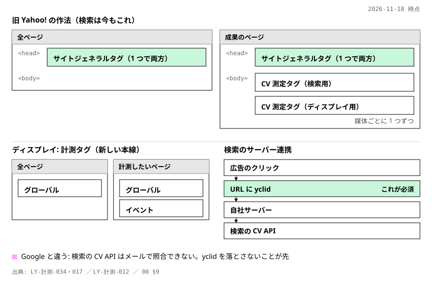
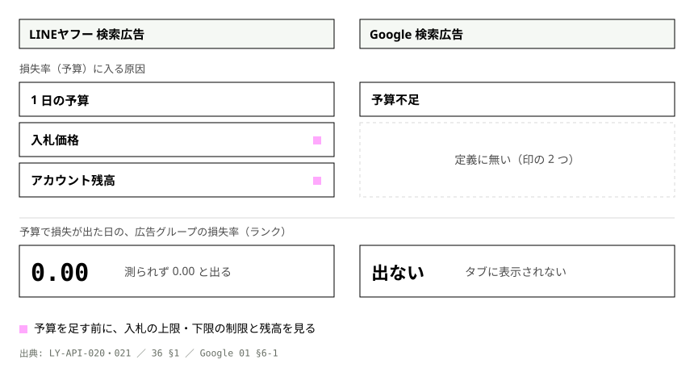

[ LINEヤフー / 00 ]
00全体像（LINEヤフー広告 検索広告・ディスプレイ広告）
位置づけ: Yahoo!広告（2026-04-01 から「LINEヤフー広告」）の地図。Google 広告の知識ベース（../Google広告の基礎/）を知っている運用者が、どこが同じで、どこを読み替えるかを最初に掴むためのメモ。LINE 広告との統合の詳細は 61_LINE広告との統合の状況.md、出典の番号は 95_出どころ一覧.md、取り違えやすい点の一覧は 96_意外な点とよくある誤解.md
このメモについて
- 確認日: 2026-11-18（LINEヤフー for Business のお知らせ・コラム約 50 本、公式 PDF「ディスプレイ広告プラットフォーム統合の詳細 Ver1.2（2026/08）」、Developer Center の計測タグ・コンバージョン API の文書、GitHub の公式 API 仕様（OpenAPI v20）と検索広告コンバージョン API 文書を取得して確認。**ヘル…
- 位置づけ: Yahoo!広告（2026-04-01 から「LINEヤフー広告」）の地図。Google 広告の知識ベース（
../Google広告の基礎/）を知っている運用者が、どこが同じで、どこを読み替えるかを最初に掴むためのメモ。LINE 広告との統合の詳細は61_LINE広告との統合の状況.md、出典の番号は95_出どころ一覧.md、取り違えやすい点の一覧は `96_意… - 使い方: 確認日から 30 日を過ぎていたら、出典を取り直してから使う。ヘルプの抜粋で確かめた事実（〔公式・抜粋〕）は、次の段でヘルプ本文と突き合わせる
- 凡例: ✓ 公式で確認 ／ △ 資料によって食い違う ／ ? 確認できず
- 主張の出どころの印: 公式LINEヤフーのヘルプ・お知らせ・公式コラム・公式 PDF・開発者文書・公式 GitHub ／〔公式・抜粋〕公式ヘルプだが本文を開けず、検索エンジンの結果に出た抜粋で確認したもの（ページの更新日が数年前のものを含む）／〔報道〕報道機関 ／〔第三者〕媒体外の解説 ／〔推測〕書き手の推測
対比
../Google広告の基礎/運用の型/）地図
本文
0.Google との違い（対比表）
- 検索広告とディスプレイ広告はアカウントが別
- 検索クエリーマッチング
- 同じ 3 種で、名前も同じ
- 品質インデックス
- 推定クリック値
- オークションランク
| 観点 | Google 広告 | Yahoo!広告（LINEヤフー広告） | 運用の判断への効き方 |
|---|---|---|---|
| サービスの範囲 | 検索・ディスプレイ・動画・P-MAX などを 1 つのアカウントで | 検索広告とディスプレイ広告はアカウントが別（同じ広告管理ツールの中で切り替え）。検索連動型ショッピング広告はさらに別の「検索広告（ショッピング）」アカウント ✓公式S-03 p9、S-52 | 予算・計測・権限を媒体の中で 2〜3 系統に分けて管理する。「アカウント全体の CPA」は検索とディスプレイで別々に出る |
| アカウントの階層 | MCC ＞ アカウント ＞ キャンペーン ＞ 広告グループ ＞ キーワード・広告 | 検索: アカウント ＞ キャンペーン ＞ 広告グループ ＞ キーワード・広告 ✓〔公式・抜粋〕S-88。上に MCC（ディスプレイは 5 階層まで）✓公式S-03 p30 | 形はほぼ同じ。Google の構成の考え方はおおむね持ち込める |
| 広告を出す引き金 | 検索: 検索語句とキーワードの一致（＋AI Max）。ディスプレイ: 人と文脈 | 検索: 検索クエリーと登録キーワードの一致 ✓公式S-66。2026-09-14 から「検索クエリーマッチング」（キーワードとの関連・検索意図・RSA・LP から広げる、任意で有効化）✓公式S-27。ディスプレイ: 人（オーディエンス）・面・文脈 | 検索の広げ方は「インテントマッチ」と「検索クエリーマッチング」の 2 段。どちらで当たったかは検索クエリーレポートのマッチタイプ列で分かる（S-27） |
| マッチタイプ | 完全一致・フレーズ一致・インテント マッチ（旧 部分一致） | 同じ 3 種で、名前も同じ（完全一致・フレーズ一致・インテントマッチ。2024-07-16 に部分一致から改称）✓公式S-63、S-64 | 名前は同じでも、類似パターンの範囲や広げ方の判断材料は Yahoo! のヘルプで別に確かめる（§5） |
| 品質の評価 | 品質スコア（1〜10、キーワード単位、診断用。推定クリック率・広告の関連性・LP の利便性） | 品質インデックス（10 段階、キーワード単位、参考値。広告の関連性・LP の利便性・推定クリック値〔ヘルプ本文の表記〕から算出。完全一致を前提にし、マッチタイプと対象外キーワードの登録状況は反映しない）✓公式S-60 | 考え方は Google の品質スコアとほぼ同じ。「品質インデックスを上げればオークションで有利」とは公式は書いていない（数値は参考値）。上げる作業より、広告の関連性と LP の中身を直す（§3） |
| オークションの順位 | 広告ランク（入札 × 品質の予測 × 文脈 × アセットの効果） | オークションランク（入札価格・広告の品質・検索の文脈・広告表示アセットの効果）。コンバージョン率はオークションランクに加味されない ✓公式S-62 | 同じ。表示順の改善は入札と品質で、成果率は順位を直接は上げない |
| 1 回の検索での表示 | 1 広告主につき 1 広告 | 1 アカウントにつき 1 広告 ✓公式S-66 | アカウント内のキーワード同士の食い合いは Google と同じ考え方で整理する |
| 入札の単位と自動入札（検索） | 目標コンバージョン単価（2026-06 に「目標値つきのコンバージョン数の最大化」から改称）・目標広告費用対効果・コンバージョン数／値の最大化・クリック数の最大化・目標インプレッション シェア。拡張クリック単価は 2025-03 に終了 | クリック数の最大化・コンバージョン数の最大化（オプションでコンバージョン単価の目標値）・コンバージョン価値の最大化（オプションで広告費用対効果の目標値）・ページ最上部掲載（API 名 TARGET_IMPRESSION_SHARE）・個別クリック単価（手動）。ポートフォリオ入札では「コンバージョン単価の目標値」「広告費用対効果の目標値」が独立の型で、最大化の 2 つはポートフォリオに使えない ✓公式S-24、S-30、S-31、S-79、S-117 | Google と名前の付け方が逆向き。Yahoo! は「最大化の中に目標値」。Google の新しい表記（目標コンバージョン単価が独立の名前）と混ぜない |
| 入札の単位（ディスプレイ） | 目的と入札戦略を選ぶ | 入札戦略はキャンペーン単位で 1 つ（同じキャンペーンの中で違う戦略の広告グループは作れない）。日予算もキャンペーン単位で、広告グループ予算は無い ✓公式S-03 p23。ただしキャンペーン間の共有予算と、複数キャンペーンに同じ戦略を付けるポートフォリオ入札はある ✓公式S-131、S-132 | 戦略を試し分けたいならキャンペーンを分ける。複数キャンペーンを 1 つの目標と予算で束ねるならポートフォリオと共有予算 |
| 「学習」の意味と待つ目安 | 「学習中」は最大 7 日。成果の評価はコンバージョン サイクル 1〜2 回 | 学習状況は「学習中／学習完了／学習停止」✓公式S-25。ディスプレイは「学習中」が 7 日以上続けば設定の見直しを勧める ✓公式S-77。検索は新規設定のほか、自動入札・コンバージョン設定の変更、キャンペーン・広告グループ・キーワードの追加、学習データ除外の設定で学習期間が生じる（日数の記載は無い）✓公式S-79 | 7 日は「止めて見直す線」で、成果の判定期間ではない。判定は Google と同じく件数とサイクルで決める（../Google広告の基礎/運用の型/） |
| 自動入札の推奨件数 | 目標コンバージョン単価の評価は 30 件以上がたまる期間 | 検索: 設定後 1 か月以上の期間に、コンバージョン数の最大化・コンバージョン価値の最大化・コンバージョン単価の目標値は 30 件以上、広告費用対効果の目標値は 50 件以上が見込めるキャンペーン。価値の最大化と広告費用対効果の目標値は、使い始めに過去 30 日でアカウント内 15 件以上を推奨 ✓公式S-116。ディスプレイの「コンバージョン数の最大化（目標値あり）」はキャンペーン単位で直近 30 日 40 件以上 ✓公式S-92 | ディスプレイの目安は検索より多い。件数が足りないうちは「目標値なし」か「クリック数の最大化」から（S-31） |
| 予算 | 1 日の費用は日予算の 2 倍まで、月は日予算 × 30.4 | 検索は同じ（1 日の請求対象は日予算の 200% まで、月の請求限度額は日予算 × 30.4）✓公式S-86。ディスプレイは 1 日 200% は同じだが、月の請求限度額は「日予算 × その月の日数」（掲載期間で数え、配信オフの日も含む）✓公式S-118 | 検索の予算の読み方は Google の知識がそのまま使える。ディスプレイは 31 日の月に 31 日分まで請求されうるので、30.4 で月の予算を組むと少しずれる |
| ターゲティング（検索） | 地域・時間帯・デバイス・オーディエンス（既定は「モニタリング」） | 地域・曜日時間帯・デバイス・オーディエンスリスト（2026-03-12 に「ターゲットリスト」から改称）・年齢と性別（一定の取引実績のあるアカウントだけ） ✓公式S-29 | 「全ユーザー」に配信したままリストを付けて入札調整する使い方を公式が勧める（Google のモニタリングに近い）✓公式S-30 |
| ターゲティング（ディスプレイ） | オーディエンス・コンテンツ・プレースメント、最適化されたターゲティング | オーディエンスリスト（共通オーディエンス・ウェブサイト訪問・顧客データ・類似・高度なセグメント・Yahoo! Audience Discovery・LINE 公式アカウントの友だち など）、スマートターゲティング、プレイスメント、コンテンツキーワード ✓公式S-25、S-03 | Yahoo! の検索履歴を使う配信は「高度なセグメント」（キーワード・URL から作るリスト）が今の窓口。旧「サーチキーワードターゲティング」は 2025-08 に終了 ✓〔公式・抜粋〕S-80 |
| クリエイティブの単位（検索） | レスポンシブ検索広告（有効な広告は広告グループに 3 本まで、見出し 15・説明文 4） | レスポンシブ検索広告（タイトル 3〜15 本・各 30 文字、説明文 2〜4 本・各 90 文字。全角は 2 文字と数える。広告グループに 1 本を推奨）✓公式S-68、S-123 | 文字数の数え方は「半角 30＝全角 15」で Google と同じ感覚。広告グループに複数本並べる Google 流は公式の推奨と違う |
| 成果の計測（検索） | Google タグ、拡張コンバージョン（ハッシュ化した個人情報）、データドリブンかラストクリック | サイトジェネラルタグ（全ページ）＋コンバージョン測定タグ、自動タグ設定（yclid）、検索広告のコンバージョン API はクリック ID（yclid）が必須で、ハッシュ化した個人情報の項目は無い ✓公式S-22。アトリビューションモデルを選ぶ機能は ? 確認できず | 「拡張コンバージョンの代わり」にはならない。クリック ID を落とさない設計（リダイレクト、パラメーターの保持）が先 |
| 成果の計測（ディスプレイ） | Google タグ、ビュースルー | 計測タグ（LINE 公式アカウント・検索広告（ショッピング）と共通）、計測タグ用のコンバージョン API（ハッシュ化したメール・電話、LINE のユーザー ID も使える）、ビュースルーは 1 日固定 ✓公式S-17、S-20、S-84 | 検索とディスプレイでタグも API も別系統。1 つの設計で両方を賄えない（2026-11 時点） |
| 計測期間と計上日 | クリックから 1〜90 日（既定 30 日）、計上はクリック日 | クリックから 1〜90 日（7 日以上を推奨）、計上はきっかけのクリックの日（複数クリックなら最後のクリックの日） ✓公式S-69、S-70 | Google と同じくクリック日で計上されるので、直近の日の成果は後から増える |
| 審査 | ほとんどは 1 営業日以内 | システムと目視。新規の広告は配信開始まで 3 営業日前後かかる場合がある ✓公式S-73、S-74 | 入稿の締め切りを Google より 2 日早く置く。キャンペーンの開始日から逆算する |
| ポリシー | Google 広告のポリシー | 「LINEヤフー広告 掲載基準」（2026-04-01 に LINE 広告の基準と統一、中身は旧 Yahoo!広告寄り）＋掲載面ごとの掲載制限 ✓公式S-07、S-08 | 同じ広告でも面によって出ない。Yahoo!ニュースなど面ごとの制限を確かめる |
| 同じ言葉で意味が違うもの | 「インプレッション」（表示された回数） | ディスプレイの vCPM 課金は「広告の 50% 以上が 1 秒以上連続で表示」で 1 回（インストリームは再生開始時点）✓公式S-03 p24、S-119。「オーディエンスリスト」は検索では旧ターゲットリストのこと ✓公式S-29。「アセット」は Google と同じく広告表示オプションの後継の呼び名 | 媒体をまたいで表示回数・CPM を並べる表には注記を付ける |
| Google に無い仕組み | — | 品質インデックスの「完全一致前提」の算出、年齢・性別オーディエンスリストのアカウント限定提供、Yahoo! 検索履歴から作る高度なセグメント、LINE 公式アカウントの友だち／ブロック中の友だちへの配信・除外、友だち追加広告・チャット誘導広告（2026-12-09 予定）、LINE の面（トークリスト等）、生成 AI 回答（Agent i）への配信 ✓公式S-25、S-29、S-40、S-38 | LINE 公式アカウントと組む施策は Google では作れない。逆に Google の P-MAX・デマンド ジェネレーション・YouTube に当たるものは無い |
| Yahoo! に無いもの（Google にはある） | P-MAX、AI Max の文面生成と最終ページ URL の拡張、データドリブン アトリビューション、拡張コンバージョン | 検索で文面の自動生成を配信時に行う機能、最終 URL の自動拡張は ? 公式に記載なし（生成 AI の「提案」機能はある、§7）。検索のアトリビューションモデルの選択は ? | 「AI Max 相当」は検索クエリーマッチングだが、範囲はマッチングの拡張に限られる（公式の説明の範囲で）〔推測〕 |
| 一括操作の道具 | Google 広告エディター、一括アップロード、スクリプト、API | キャンペーンエディター（検索・ディスプレイ）、Google 広告エディターの CSV を読み込める、スクリプト（JavaScript）、API（v20）、公式の MCP サーバー（参照のみ）✓〔公式・抜粋〕S-75、S-76、✓公式S-16、S-26 | Google のアカウントを複製するときは、エディターの CSV でキャンペーンタイプの値だけ直して取り込む（S-76） |
0-2.用語の対応表（Google → Yahoo!）
Yahoo! 側の名前は API の列挙値・お知らせ・ヘルプの抜粋で確認した ✓公式S-24、S-25 ほか。「機能として対応する」という対応づけは書き手の判断〔推測〕で、中身が完全に同じとは限らない（違いは各節）。
| Google 広告 | Yahoo!広告 | 注意 |
|---|---|---|
| 品質スコア | 品質インデックス | どちらも 10 段階の診断値（§3-2） |
| 広告ランク | オークションランク | 成果率は入らない（§3-1） |
| 検索語句 | 検索クエリー（検索クエリーレポート） | |
| 除外キーワード | 対象外キーワード | 除外のマッチタイプ名は両方「部分一致」が残る |
| インテント マッチ（旧 部分一致） | インテントマッチ（旧 部分一致） | 表記は Yahoo! が「インテントマッチ」と続け書き |
| AI Max の検索語句の拡張 | 検索クエリーマッチング（旧称の予告「AI キーワード拡張」） | 範囲が違う（§5-2） |
| 見出し | タイトル | 30 文字（全角 2 換算）×最大 15 |
| 最終ページ URL | 最終リンク先 URL | |
| サイトリンク アセット | クイックリンクアセット | 2026-09-16 から自動作成が既定オン |
| コールアウト アセット | テキスト補足アセット | |
| 構造化スニペット アセット | カテゴリ補足アセット | |
| 電話番号アセット | 電話番号アセット | |
| ビジネス名 | ビジネス名アセット | 付けないとドメイン名が出る |
| 広告カスタマイザ | アドカスタマイザー | |
| 動的検索広告 | 動的検索連動型広告 | |
| 検索パートナー | 提携パートナー（検索ネットワーク） | |
| 手動 CPC | 個別クリック単価 | |
| 目標コンバージョン単価 | コンバージョン数の最大化＋コンバージョン単価の目標値 | 名前の向きが逆（§4-1） |
| 目標広告費用対効果 | コンバージョン価値の最大化＋広告費用対効果の目標値 | 同上 |
| 目標インプレッション シェア | ページ最上部掲載（API: TARGET_IMPRESSION_SHARE） | 目標は「最上部」 |
| 入札単価調整 | 入札価格調整率 | 自動入札では効かないものがある |
| 共有予算 | キャンペーン間の共有予算 | |
| データ除外 | 自動入札の学習データ除外 | |
| オーディエンス セグメント（モニタリング） | オーディエンスリスト（全ユーザー配信＋調整） | 検索の旧名は「ターゲットリスト」 |
| リマーケティング | サイトリターゲティング／ウェブサイト訪問ユーザー | |
| 類似セグメント（Google は終了） | 類似ユーザー（ディスプレイ、10% まで） | Yahoo! には今もある |
| 最適化されたターゲティング | スマートターゲティング | リスト外へ広がる挙動は似ている |
| プレースメント | プレイスメント | |
| Google タグ | サイトジェネラルタグ＋コンバージョン測定タグ（検索）／計測タグ（ディスプレイ等） | 検索とディスプレイで別系統 |
| gclid | yclid（＋2026-10 から _ly_c など） | |
| コンバージョン アクション | コンバージョン設定 | 「自動入札への利用」で入札に渡すかを分ける |
| メイン／サブのアクション | 「コンバージョン数」／「コンバージョン数（全て）」 | 対応は〔推測〕（§9-1） |
| オフライン コンバージョンのインポート | コンバージョンのインポート | |
| 最適化案 | 最適化提案 | |
| テスト（実験） | A/B テスト | |
| Google 広告エディター | キャンペーンエディター | Google の CSV を取り込める |
| Google 広告スクリプト | LINEヤフー広告 スクリプト | ランタイムに版がある |
1.アカウントの構造

統合されたのはディスプレイだけで、検索は名前が変わっただけ。アカウントが別なので、媒体全体の CPA・ROAS は 2 つのレポートを足して作る。
出典: LY-統合-002・LY-アカウント-001・61 §1 ほか 6 件 · 2026-11-18 時点
- ビジネスマネージャー（BM）
- 検索とディスプレイでアカウントが分かれる
- BM と LINE 公式アカウントの認証と接続が先
1-1.検索広告 ✓公式S-87、✓〔公式・抜粋〕S-88
- 階層: アカウント ＞ キャンペーン ＞ 広告グループ ＞ キーワード・広告
- 上限（ヘルプ本文 S-87 で確認）: アカウントにキャンペーン 100、広告 400 万（配信オフを含み、審査否認を除く）。キャンペーンに広告グループ 2,000。広告グループに広告 50、キーワード・対象外キーワード・オーディエンスリストの関連付け・動的検索連動型広告の対象ページで合計 2,000。アカウント全体でキーワード等 5 万、キャンペーン単位の対象外キーワード・リスト関連付け・地域／曜日時間帯／デバイスの設定で合計 95 万。対象外キーワードリストは 1 アカウント 20 リスト。コンバージョングループは 1 アカウント 100。1 キーワードは 80 文字まで（S-68）。「1 キーワード 10 語」と「対象外キーワードリスト 1 リスト 5,000 個」は抜粋のまま（本文で読んだページには無い。10 語は対象外キーワードの決まりとしては本文にある、S-121）
- キャンペーンのタイプ（API）: 標準キャンペーン（STANDARD）、アプリキャンペーン（MOBILE_APP）、動的検索連動型広告用キャンペーン（DYNAMIC_ADS_FOR_SEARCH）✓公式S-24
- 検索連動型ショッピング広告は「検索広告（ショッピング）」という別のアカウントで扱う（Yahoo! JAPAN 商品情報掲載と検索連動型ショッピング広告の 2 機能）✓公式S-52
- くわしくは
04§2-1（階層と上限）
1-2.ディスプレイ広告 ✓公式S-03 p22・p30
- 階層: ルート MCC ／ MCC アカウント（5 階層まで）＞ 広告アカウント ＞ キャンペーン ＞ 広告グループ ＞ 広告
- 運用型と予約型のアカウント区分は 2026-04-01 に廃止。1 アカウントで両方出せる（予約型は代理店経由のみ）
- アカウント種別: オンラインサインアップ／代理店。請求書払いと予約型は代理店だけ
- 権限: 管理権限・登録更新権限・参照権限
1-3.ID と、ほかのサービスとの接続
- ログインは統合された「ビジネス ID」。未統合の ID は 2026-10-13 にシステムが自動統合 ✓公式S-14
- ビジネスマネージャー（BM）: LINEヤフーのサービス同士をつなぎ、オーディエンスの共有などを可能にする管理基盤 ✓公式S-56。2026-04-01 から、オンラインサインアップで新しく広告アカウントを作るときは BM と LINE 公式アカウントへの接続が必須（代理店経由・海外住所・API 経由・既存アカウントは任意）✓公式S-12
- 検索広告アカウントを BM・LINE 公式アカウントにつないで使える機能は、2026-04-01 時点では「なし」 ✓公式S-12
運用の判断への効き方:
- 検索とディスプレイでアカウントが分かれるので、媒体全体の CPA・ROAS は 2 つのレポートを足して作る。どちらかの成果をもう片方の入札に使う仕組みは無い（? 公式に横断の入札の記載なし。注力領域として「検索広告との連携強化」が挙がるだけ、S-03 p13）
- 検索のキャンペーン上限は 100（✓ §1-1・LY-上限-001 と同じ）。Google で細かく分けたアカウントをそのまま持ち込むと上限に当たりうる。Google と同じく「機械学習に合わせて束ねる」方向で組む〔推測〕
- ディスプレイで LINE 公式アカウントと組む施策（友だち追加、チャット誘導、友だちリストへの配信）をするなら、BM と LINE 公式アカウントの認証と接続が先（S-12、S-40）。代理店経由のアカウントでも、使いたい機能があるなら接続する
2.キャンペーンの種類（目的）
2-1.検索広告
| 種類 | 中身 | 印と出典 |
|---|---|---|
| 標準（レスポンシブ検索広告） | キーワードに対してテキスト広告を出す基本形 | ✓公式S-24 |
| 動的検索連動型広告 | サイトの内容（ページフィード）から自動で見出しと着地先を作る。審査は約 3 営業日 | ✓公式S-24、S-73 |
| アプリ（アプリ訴求） | スマートフォン・タブレット向けのアプリ用広告 | ✓公式S-24 |
| 検索連動型ショッピング広告 | 別アカウント（検索広告（ショッピング））。2026-03-25 に自動入札（β）、2026-09-16 に価値の最大化（β）とクリック数の最大化を追加。2026-03 に最上部掲載を開始 | ✓公式S-53、S-54、S-107 |
| 検索連動型ブランディング広告 | 指名検索の上部に画像・動画つきで出す予約型の商品（申し込みと入稿の流れがある） | ✓公式S-03 p9（名前）、仕様は ? 未取得 |
- くわしくは
04§2-2（キャンペーンの種類と広告を表示する検索画面）
2-2.ディスプレイ広告（運用型）の目的 ✓公式S-03 p33、S-81
サイト誘導／コンバージョン／アプリ訴求／友だち追加／動画再生／商品リスト訴求（動的ディスプレイ広告）／ブランド認知。ヘルプの抜粋には「来店促進」も挙がる（△ 統合の資料の一覧には無い）。2026-12-09 に「チャット誘導」目的が加わる予定 ✓公式S-40
- 目的ごとに選べる入札戦略と課金が変わる（認知は vCPM、動画再生は CPV、その他は CPC が基本。動画再生・その他でも vCPM（β）を選べる）✓公式S-03 p19
- 予約型は、掲載面・期間・回数・課金・ターゲティングをまとめた「商品」を買う形。代理店経由のみ。掲載開始の 4 営業日前の 23:59 までに入稿 ✓公式S-47、✓〔公式・抜粋〕S-74
- くわしくは
23§3（目的・課金・広告タイプ）、02§2-3（目的ごとの入札戦略）
運用の判断への効き方:
- ディスプレイの目的は 「何を最大化するか」をシステムに渡すスイッチ。サイト誘導で作ってもトップページに限られるわけではなく、目的に沿って配信先が自動で決まる ✓公式S-81
- 「クリック数の最大化」を選ぶと、目的の最適化ポイントに関係なくクリック数で最適化される ✓公式S-81。コンバージョン目的で作っても入札がクリック数の最大化なら、成果では最適化されない
- 検索連動型ショッピング広告は、2026 年に入って自動入札・オーディエンスリスト・計測タグと次々に入った途中の商品で、β の印が多い。小さく試し、ヘルプの最新を確かめてから広げる〔推測〕
3.オークションと品質（検索）
- コンバージョン率はオークションランクに加味されない
- 推定クリック値
- 完全一致することを前提
- 品質インデックスは診断値として読む
- 表示回数とクリック率の前後比較は、この日をまたぐと位置の変更の影響が混ざる
3-1.掲載順位の決まり方 ✓公式S-62、S-61
- 1
検索クエリーに一致するキーワードの広告を集める
- 2
掲載対象外のものを除く
- 3
オークションランクの高い順に表示する
- 4
オークションランクの要素: 入札価格、広告の品質、検索の文脈（検索キーワード、所在地、デバイス、時刻、検索語句の性質、同じページの他の広告と検索結果など）、広告表示アセットで見込まれる効果
- 5
オークションのたびに「オークションランクの下限値」も決まり、これを下回ると掲載されない
- 6
オークションのたびに計算され、キーワードや広告に固定の値として付くものではない
- 7コンバージョン率はオークションランクに加味されない
- 8
アセットの有無・表示方法は広告の品質と掲載順位を考えて決まり、品質が低い広告ではアセットを設定しても表示されないことがある
- 9
広告の品質に影響しないもの: 入札価格、アカウントの構造（広告文と LP を変えずにキーワードを別の広告グループ・キャンペーンへ移しても品質は変わらない）、提携パートナーでの掲載、掲載順位（推定クリック率は順位で正規化）、予算で表示されなかった状態（S-61）
- 10
くわしくは
04§7-1・§7-3（オークションランク、広告の品質）
3-2.品質インデックス ✓公式S-60、S-61
- 広告の品質を 10 段階で示す。キーワードごとに表示され、10 に近いほど高い
- 算出要素: 広告の関連性、ランディングページの利便性、推定クリック値（ヘルプ本文の表記。初版は抜粋から「推定クリック率」と書いていた）。要素ごとの評価は「平均より上／平均値／平均より下」
- 具体的な品質の数値は公開されておらず、品質インデックスは「参考値」
- 検索クエリーと登録キーワードが完全一致することを前提に算出され、マッチタイプと対象外キーワードの登録状況は反映されない（対象外キーワードをうまく使えば「広告の品質」自体は上がりうる、とも書く）。検索クエリーとオークション時の要素（デバイス・場所・時間帯・広告表示アセット）も算出に入らない
- 一覧とキーワードレポートの値は、表示期間にかかわらず「現在の値」。過去の値は「品質インデックス（履歴）」などの項目で見る
- 新しいキーワードは「-」で、約 1 日後に反映。インプレッションが無いと評価値は出ない。△ 自動運用ルールのヘルプ（H000044529）は「新しく作成したキーワードの品質インデックスは 6」と書く（ルールの条件として扱うときの値と読める〔推測〕）
- 2022 年に「ランディングページの利便性」が要素に加わり、要素ごとの評価が見られるようになった（〔第三者〕KWM ブログの記述として検索結果に出たもの。公式で日付は確認できず ?）
- くわしくは
04§7-2（品質インデックス）
3-3.検索結果での位置（2026-07-15 から）✓公式S-32
- ページ上部以外の広告は、検索ユーザーの利用状況に応じて「最適な場所」に表示する方式に変更。上部の掲載は変わらない
- 変更後はインプレッション数・クリック数が増える傾向にある、と公式
運用の判断への効き方:
- Google の品質スコアと同じく、品質インデックスは診断値として読む。上げる手段は Google と同じ 3 要素（広告の関連性、推定クリック値、LP）で、マッチタイプを変えても品質インデックスは動かない（S-60）
- 2026-07-15 以降、表示回数とクリック率の前後比較は、この日をまたぐと位置の変更の影響が混ざる。7 月中旬をまたぐ比較では、上部の表示割合（インプレッションシェア系の指標）も併せて見る〔推測〕
4.入札と予算
- キャンペーン個別入札設定に限った話
- ポートフォリオ入札設定では「コンバージョン単価の目標値」「広告費用対効果の目標値」を独立の戦略として選べる
- ページ最上部掲載だけはシグナルを使わない
- キャンペーン単位で直近 30 日 40 件以上
- 過去の検索キーワード
- キャンペーン間の共有予算
4-1.検索広告の入札戦略 ✓公式S-24、S-30、S-31
| 戦略 | 目的 | 補足 |
|---|---|---|
| 個別クリック単価（CPC） | 手動入札 | キャンペーンに設定 |
| クリック数の最大化 | 予算内でクリック数を最大化 | 成果の件数が少ない時期の入口として公式が勧める |
| コンバージョン数の最大化 | 予算内で成果数を最大化 | オプションで「コンバージョン単価の目標値」（1〜800,000 円）。設定後 1 か月以上で 30 件以上が見込めるキャンペーンを推奨（S-116） |
| コンバージョン価値の最大化 | 予算内で成果の価値を最大化 | オプションで「広告費用対効果の目標値」。価値の最大化は 30 件以上、広告費用対効果の目標値は 50 件以上（設定後 1 か月以上）、使い始めはアカウントで過去 30 日 15 件以上を推奨。「1 コンバージョンあたりの価値」の設定が要る（S-116） |
| ページ最上部掲載 | 目標の割合で検索結果の最上部に出す | API の名前は TARGET_IMPRESSION_SHARE。2026-07 の公式コラムでもこの名前で載っている |
- 「独立した目標値の戦略は作れない」はキャンペーン個別入札設定に限った話。キャンペーン個別では、API の仕様も旧来の独立の目標値（TARGET_CPA、TARGET_ROAS）を ADD・SET で指定できないと書く ✓公式S-24。ポートフォリオ入札設定では「コンバージョン単価の目標値」「広告費用対効果の目標値」を独立の戦略として選べる（ほかにクリック数の最大化・ページ最上部掲載）。逆に「コンバージョン数の最大化」「コンバージョン価値の最大化」はキャンペーン個別入札設定でしか使えない ✓公式S-124、S-79、S-117。API のポートフォリオ（BiddingStrategyService）で目標値の戦略を作れるかは、API 文書を取り直していない（
02§2-1 は〔推測〕） - キャンペーン個別の設定で目標値を付けると、一覧の入札戦略欄は「コンバージョン数の最大化 1,000円」のように出るが、パフォーマンスレポートは目標値の有無にかかわらず「コンバージョン数の最大化」と出る ✓公式S-117
- コンバージョン単価の目標値は広告グループ単位でも置けるが、公式は勧めない。ポートフォリオでは入札価格の上限（1〜80,000 円）・下限（1〜79,999 円）を付けられるが、付けないのが推奨 ✓公式S-117
- 上の 4 つの戦略（コンバージョン数・価値の最大化、2 つの目標値）は、コンバージョン測定が設定され、「自動入札への利用」が 1 つ以上「する」であることが前提。使い始めの時点でそのキャンペーンにコンバージョンが無くてもよい（アカウント全体のデータで最適化する）✓公式S-116
- キャンペーンごとの設定（「キャンペーン個別入札設定」）と、複数キャンペーンで共有するポートフォリオ入札（API の BiddingStrategyService）がある ✓公式S-24、S-31
- 自動入札では、ターゲティングごとの入札価格調整率の多くが効かない（ターゲティング自体は効く）✓公式S-79。効くのはクリック数の最大化（デバイス・地域・曜日時間帯・オーディエンスリストすべて）と、コンバージョン単価の目標値のデバイス（調整率は入札価格ではなく目標値に掛かる。1,000 円に +40% なら目標 1,400 円）だけ。コンバージョン数の最大化・価値の最大化・広告費用対効果の目標値・ページ最上部掲載では、デバイスの −100%（そのデバイスに出さない）を除いてすべて無効
- 自動入札で使うシグナル: デバイス、所在地、地域への関心、曜日・時間帯、オーディエンスリスト（登録からの経過時間など）、広告の特性、ブラウザー、OS、実際の検索クエリー。ページ最上部掲載だけはシグナルを使わない ✓公式S-79
- インテントマッチのキーワードは、コンバージョン数・価値の最大化と 2 つの目標値との組み合わせが推奨 ✓公式S-79
- 自動入札にすると、効果の高い広告の優先表示を「優先しない」にしていても「優先する」が適用される ✓公式S-79
- 「入札戦略の状況」で、学習中のほか、予算制限・入札単価の上限下限・配信対象の過小・コンバージョン設定の不備などを確認できる ✓〔公式・抜粋〕S-78
- 「自動入札の学習データ除外」: コンバージョン測定に問題が出た期間を学習から外す。過去の期間を指定すると通常 1 週間程度で学習が完了して適用（その間は入札とコストが一時的に下がりうる）、これからの期間ならすぐ適用。期間は最大 14 日、1 アカウント 500 件。標準と動的検索連動型広告のキャンペーンで、効くのはコンバージョン系の 4 戦略だけ。セールなどの一時的な変化には使わず「自動入札のスポット調整」を使う ✓公式S-79（H000052629）
- 年齢・性別オーディエンスリストを付けると、その情報も自動入札のシグナルに使われる、と公式コラム ✓公式S-30
- くわしくは
02§2-1・§2-2・§3-1・§4-1・§6・§7-1・§9-1（戦略の一覧、推奨件数、学習、スポット調整と学習データ除外、入札価格調整、ポートフォリオ）
4-2.ディスプレイ広告の入札戦略 ✓公式S-25、S-03 p19、S-81、S-92、S-120
- 種類（API）: コンバージョン数の最大化、コンバージョン価値の最大化、クリック数の最大化、動画再生数の最大化、ビューアブルインプレッション数の最大化、友だち追加数の最大化、ビューアブルインプレッション単価（vCPM）、個別クリック単価、動画再生単価（CPV）、個別友だち追加単価（CPF）
- 「コンバージョン数の最大化」「コンバージョン価値の最大化」「友だち追加数の最大化」はそれぞれ「目標値あり／なし」がある。コンバージョン数の最大化（目標値あり）はキャンペーン単位で直近 30 日 40 件以上が推奨。過去 30 日の実績から、設定後 7 日でコンバージョン単価を目標に寄せる。新しく付けるときは直近 7 日の単価を基準に置き、低すぎると配信されないことがある。インプレッションが減る挙動が 2 週間ほど続けば目標を約 +20% の範囲で上げ、単価の悪化が 2 週間ほど続けば約 −20% の範囲で下げる ✓公式S-92
- 入札戦略はキャンペーンで設定する（広告グループごとに独自の入札価格は置ける）。最適化に使うコンバージョンをキャンペーン単位で選べる ✓公式S-120、S-03 p23
- 目的ごとに選べる戦略が違う（例: サイト誘導はクリック数の最大化・拡張クリック単価・個別クリック単価、ブランド認知はビューアブルインプレッション単価・数の最大化、アプリ訴求ではコンバージョン価値の最大化は使えない）。「クリック数の最大化」を選ぶと目的にかかわらずクリック数で最適化され、コンバージョン・アプリ訴求・商品リスト訴求で「個別クリック単価」を選ぶと目的の最適化は効かない ✓公式S-81、S-120
- 自動の戦略が最適化に使う情報には、年齢・性別・興味関心・サイトの訪問履歴・過去の検索キーワード・オーディエンスリスト・プレイスメント・広告タイプなどが入る。このため性別や年齢で広告グループを分けて入札を変える構成はまとめるよう公式は勧める ✓公式S-120
- 課金: クリック課金は同じセッション内の 2 回目以降のクリックは課金しない。動画再生課金は 10 秒以上の再生（10 秒未満の動画は最後まで）で 1 回、入札は 1,000 再生あたりで置く。ビューアブルインプレッション課金は 1,000 回ごと。ビューアブルインプレッション課金（β）は、コンバージョン数・価値の最大化と動画再生数の最大化のキャンペーンで選べる ✓公式S-81
- ディスプレイには拡張クリック単価の設定項目が API に残る（EnhancedCpcEnabled）✓公式S-25。拡張クリック単価はディスプレイでは今も入札戦略の 1 つで、学習中が続くときの代替として案内されている ✓公式S-77、S-120
- 学習状況: 広告管理ツールは「学習中」だけを出し、学習が終わると消える。「学習停止」（学習中に配信をオフ）と「学習完了」はキャンペーンエディターにだけ出る。目標値ありはキャンペーンのコンバージョン数が急に変わったときにも学習中になりうる ✓公式S-77
- くわしくは
02§2-3・§3-2・§4-2・§5-1・§7-2・§9-2（戦略の一覧、推奨件数、学習状況、目標値の動かし方、入札価格調整、ポートフォリオ）
4-3.予算
- 検索: キャンペーンの 1 日の予算。1 日の請求対象は 1 日の予算の 200% まで（その日に何度か変えたら最も高い額の 200%）。1 か月の請求限度額は「1 日の予算 × 30.4 日」が目安で、月の途中で変えたら、変更までの費用＋変更後の予算 × 残り日数。1 日・1 か月とも限度に達すると掲載が止まる。月の途中で作ったキャンペーンは「日予算 × 残りの日数」、スケジュール設定なら「日予算 × 掲載日数」。1 日は日本時間 0:00〜23:59、金額は税抜き。レポートには限度を超えた分も含む全コストが出るので、請求額とは違うことがある ✓公式S-86
- 検索: キャンペーン間の共有予算がある。共有予算でも 1 日の請求対象は共有予算の 200% まで ✓公式S-86。目標値なしのコンバージョン数・価値の最大化のキャンペーンは共有予算に入れられない（ディスプレイも同じ）✓公式S-102（第 4 段で
02§8-3 が本文を確認） - ディスプレイ: 日予算はキャンペーンで設定（必須。広告グループ予算は無い）。キャンペーン予算の上限（期間の総額）と予算の最適化は無い ✓公式S-03 p23。ただしキャンペーン間の共有予算（1 共有予算 1,000 キャンペーン、1 アカウント 2,000 個）と、作成時に共有予算もいっしょに作れるポートフォリオ入札はある（アプリ訴求目的・インストリーム広告のキャンペーンではポートフォリオを使えない）✓公式S-118、S-131、S-132、S-135。初版は「日予算はキャンペーン単位のみ」とだけ書き、この 2 つが読み取りにくかった（
02§11） - ディスプレイ: 1 日の請求対象は日予算の 200% まで（共有予算も同じ）。1 か月の請求限度額は「日予算 × その月の日数」（月の途中から・途中までなら掲載日数、途中で日予算を変えたら「変更までの請求対象コスト＋変更後の日予算 × 残りの日数」）。配信オフ・審査否認・曜日時間帯で出ない日も日数に数える。日予算を当日の消化額より下げると、その日の配信は順次止まり翌日再開。クリックの有効期間は 24 時間で、掲載期間の後に起きたクリックのコストは請求しない ✓公式S-118
- くわしくは
02§8（検索・ディスプレイの予算と共有予算）
運用の判断への効き方:
- Google で「目標コンバージョン単価」を使っていたキャンペーンを移すときは、Yahoo! では「コンバージョン数の最大化」を選び、目標値を付ける。名前で探すと見つからない（S-31、S-24）
- 件数の目安は、検索で「設定後 1 か月以上の期間に 30 件（広告費用対効果の目標値は 50 件）」、ディスプレイで「直近 30 日に 40 件」（どちらもキャンペーン単位）。届かないなら「目標値なし」か「クリック数の最大化」から始め、件数がたまってから目標値を付ける（S-116、S-92、S-31）。件数の判定の仕方は Google の運用の型（
../Google広告の基礎/運用の型/）をそのまま使える〔推測〕 - 検索の自動入札では、クリック数の最大化を除き地域・曜日時間帯・オーディエンスリストの調整率は効かない（S-79）。調整率で時間帯や地域を絞っているつもりで実は効いていない、という状態になりうる。切り替えたら、絞り込みはターゲティング（配信の対象から外す）かキャンペーンの分割で行う〔推測〕。コンバージョン単価の目標値に切り替えるときは、デバイスの調整率が目標値に掛かるので、公式は削除を勧めている（S-117）
- ディスプレイの月の請求限度額は「その月の日数」で数えるので、検索の 30.4 日と同じ式で月の予算表を作ると、31 日の月は少し多く、28 日の月は少なく請求されうる（S-118、S-86）
- ディスプレイは戦略がキャンペーン単位で固定なので、戦略の比較は「キャンペーンを分ける」か「A/B テスト機能」で行う（A/B テスト機能は検索広告にある ✓公式S-30。ディスプレイの A/B テストは API に AbTest があるが中身は ?、S-25）
5.キーワードとマッチング（検索）
- 類似パターン
- 語順に関係なく
- 語順が違って意味が変わる検索には出ない
- 除外のフレーズ一致は逆に語順を問う
- 2024-07-16
- 対象外キーワードのマッチタイプは「部分一致」のまま
5-1.マッチタイプ ✓公式S-63、S-64、S-24、✓〔公式・抜粋〕S-65（完全一致の類似パターンの細部）
| マッチタイプ | 当たる範囲（完全一致の類似パターンの細部は抜粋） |
|---|---|
| 完全一致 | 登録キーワードと検索キーワードが完全に一致、または類似パターンに該当。表記ゆれ・変換ミス・省略形、助詞などの機能語の違い、語順の違いも対象になる例がある |
| フレーズ一致 | 登録キーワードの語句が語順に関係なく含まれる、完全に一致する、前後に他の語がある、または類似パターン（送り仮名の違い、変換ミス、省略形、漢字・ひらがな・カタカナの違いなど）に当たるときに出る。語順が違って意味が変わる検索には出ない（登録「ギフト 誕生日」なら「誕生日 女性 ギフト」に出る）✓公式S-136。除外のフレーズ一致は逆に語順を問う（語順の入れ替えや間の語では除外しない、§5-3） |
| インテントマッチ（旧 部分一致） | 類義語や関連する検索にも出る。完全一致・フレーズ一致で当たる検索も含むので、最も表示機会が多い。判断材料は最近の検索行動、LP の内容、同じ広告グループの他のキーワード |
- 改称: 「部分一致」→「インテントマッチ」を 2024-07-16 に実施（ヘルプ本文。公式コラム S-96 は「2024 年 8 月」とまとめている）。機能は変わらない。対象外キーワードのマッチタイプは「部分一致」のまま（S-121）。英語名は Broad Match のまま ✓公式S-63、S-64、S-79、S-121、S-96
- 公式の使い分け: 始めたばかり・表示機会を増やしたいならインテントマッチ、後でフレーズ一致や完全一致に絞る。対象が明確なら完全一致。同じ語でマッチタイプだけ違うキーワードを同じ広告グループに並べて試してよい ✓公式S-63
- インテントマッチの判断材料: ユーザーの最近の検索関連行動、LP の内容、同じ広告グループの他のキーワード ✓公式S-64
- くわしくは
04§4（マッチタイプの定義と例）
5-2.検索クエリーマッチング（2026-09-14 提供開始）✓公式S-27、S-122
- 検索意図との関連性が高いとシステムが判断した広告を出す。判断に使うのは、検索意図、入稿キーワードとの関連性、レスポンシブ検索広告のアセットの内容、LP の内容 など。関連性が高いときは、入稿キーワードが無くても広告を出すことがある（ヘルプ本文。初版はキーワードの拡張としてだけ書いていた）
- 使えるのはキャンペーンタイプ「標準」とその広告グループだけ。キャンペーンか広告グループの単位で「利用する」に設定する（広告グループで使うには上位のキャンペーンでも「利用する」）。既定でオンになるとは書かれていない（設定して使う形）
- トラッキングのパラメーター: キーワードなしで出たときは
{matchtype}＝a、{targetid}＝kwl-3500001、{keyword}は空。インテントマッチとして出たときは入稿キーワードのマッチタイプ（e・p・b）と kwd- の ID が返る ✓公式S-122 - 当たった検索クエリーは、検索クエリーレポートのマッチタイプに「検索クエリーマッチング」と出る
- 予告時の名前は「AI キーワード拡張」。スクリプトの新ランタイム（V202607、2026-07-22）で、キャンペーンに
enableAiSetting、広告グループにdisableAiKeywordExpansionのフィールドが入った（キャンペーンは「有効にする」、広告グループは「止める」向きの名前）✓公式S-27、S-113 - Google の AI Max（検索語句の拡張・文面のカスタマイズ・最終ページ URL の拡張）と比べると、公式の説明にあるのはマッチングの拡張だけ。文面の自動生成や URL の拡張は記載なし ?
- くわしくは
04§5（検索クエリーマッチング）
5-3.対象外キーワード（除外）
- 対象外キーワードリストは 1 アカウント 20 リスト ✓公式S-87。1 リスト 5,000 個は抜粋のまま（上限数のヘルプ本文には無い）✓〔公式・抜粋〕
- マッチタイプは完全一致・フレーズ一致・部分一致の 3 つ（除外は「部分一致」の名前のまま）。フレーズ一致の除外は、語順が入れ替わったり間に別の語が入ったりすると除外しない。部分一致の除外は、語順や間の語に関係なく、その語を含めば除外する ✓公式S-121
- 除外には表記ゆれ・類義語などの「類似パターン」が効かない。「バスケットボール シューズ」を除外しても「バスケ シューズ」には出うるので、言い換えも自分で足す ✓公式S-121
- 1 件 10 語まで（検索広告（ショッピング）は 6 語）。11 語以上の検索で 11 語目より後ろに除外語があると、除外されずに出ることがある。同じ広告グループにキーワードとして登録済みの語は除外に入れられない。「既存キャンペーンの設定を反映する」で作ると、除外は古い順に 100 件までしか写らない ✓公式S-121
- くわしくは
04§6（対象外キーワード）
運用の判断への効き方:
- 拡張の段は「インテントマッチ」→「検索クエリーマッチング」の 2 段。どちらで当たったかは検索クエリーレポートのマッチタイプ列で切り分けられるので、検索クエリーマッチングをオンにしたら、その列で絞って除外の候補を拾う（S-27）
- 検索クエリーマッチングは RSA のアセットと LP を判断材料にする。広告文と LP が広く書かれていると、意図より広い検索に当たりうる〔推測〕。Google の AI Max と同じく、LP は「マッチングの材料」でもある
- Google から移すとき、除外キーワードの「部分一致」という名前はそのまま通じる。除外は類似パターンが効かないので、表記ゆれ・略称・言い換えを並べて登録する（S-121）。Google 側の除外の挙動との細かい比較は、本知識ベースでは突き合わせていない ?
- 検索クエリーマッチングはキーワードが無くても出るので、
{targetid}が kwl-3500001 の流入を計測側で分けておくと、拡張分だけの成果を後から切り出せる〔推測〕（S-122）
6.ターゲティング
- 配信対象に設定したリストにだけ入札価格調整率を付けられる
- 一定の取引実績のあるアカウントだけ
- 高度なセグメント
- スマートターゲティング
- オーディエンスリストを設定した場合だけ範囲外の人にも配信されうる
- 検索のオーディエンスリストは「全ユーザー配信＋リストで入札調整」
6-1.検索広告 ✓公式S-82、S-83、S-24、S-29、S-30
- キャンペーンのターゲティング（API）: 地域、時間帯（曜日・時間帯）、ネットワーク、デバイス、半径
- ネットワーク（広告を出す検索画面）: 「Yahoo!検索のみ」か「Yahoo!検索を含むすべての検索画面（提携パートナー）」✓公式S-24。ヘルプ本文（サービス概要）は、広告を出す画面を「全て」（検索結果と、キーワードからの誘導先ページ）と「ウェブサイト検索のみ」から選べる、と書く（S-66。△ API の 2 値と同じ設定か別かは未確認）
- オーディエンスリスト（2026-03-12 に「ターゲットリスト」から改称、機能は同じ）。種類（API）: デフォルトリスト、URL 条件リスト、組み合わせリスト。検索キーワードに当たった人のうち、リストに含まれる人が対象。配信対象に設定したリストにだけ入札価格調整率を付けられる（除外リストには不可）。オーディエンスリストは 1 アカウント 2,000 件まで（デフォルトを含む）。デフォルトのリストは 1 アカウント 1 件で削除できない。サイトリターゲティングで使うにはユーザーサイズ 100 件以上（100 件以上でも配信されないことがある）
- 年齢・性別オーディエンスリスト（2026-03-12〜）: システムが用意したリストを広告グループに関連付ける。一定の取引実績のあるアカウントだけ（条件は非開示）。編集不可、ユーザーサイズは見えない、組み合わせリストに使えない
- 入札価格調整: 対象はデバイス、地域、オーディエンスリスト、曜日・時間帯（検索広告（ショッピング）は曜日・時間帯、性別、年齢、デバイス）。複数は掛け算で、引き上げは最大 900%、引き下げは最大 90% に丸める。ただしデバイスの −100% はそのまま効く。自動入札での効き方は §4-1
- 配信に使えるリストの下限: 検索広告と検索広告（ショッピング）のオーディエンスリストは、2026-05-13 までに 1,000→100 人以上に ✓公式S-115
- くわしくは
02§7-1（検索の入札価格調整）
6-2.ディスプレイ広告 ✓公式S-25、S-03 p25〜37、S-85、✓〔公式・抜粋〕S-80
- ターゲティングの種類（API）: 曜日・時間帯、地域、年齢、性別、オーディエンスリスト、プレイスメント、デバイス、ウェブ／アプリ、OS、OS バージョン（アプリ訴求のみ）、コンテンツ（コンテンツキーワード）。予約型専用にポジション・プレイスメントカテゴリ
- オーディエンスリストの種類（API）: 組み合わせ、類似ユーザー（10% まで）、ウェブサイト訪問ユーザー、顧客データ、共通オーディエンス（興味関心・購買意向・属性ライフイベント）、アプリユーザー、Yahoo! Audience Discovery、高度なセグメント、広告アクションユーザー、LINE 公式アカウントの友だち、LINE 公式アカウントをブロック中の友だち、ビジネスマネージャー
- 高度なセグメント: 任意のキーワードや URL を入れると、機械学習でリストを作る。そのキーワードを検索した人だけでなく、検索行動が似た人にも配信される。1 広告グループのオーディエンスリストは配信と除外の合計で 10 件まで（抜粋）。△ ただし統合の詳細資料はオーディエンスリスト 30・共通オーディエンスリスト 50 までと書き（
61§4-1、S-03）、23§4-3 のヘルプ本文でも決められなかった（ルール表 LY-ターゲティング-017）。検索期間や回数は指定できず、キーワード別のレポートも出ない（抜粋 S-80）。旧サーチキーワードターゲティングは 2025-08 に終了 - 配信に使えるリストの下限: 2026-11-10 から 5 種類（広告アクションユーザー、高度なセグメント、BM、LINE 公式アカウントの友だち、ブロック中の友だち）は 100 人以上 ✓公式S-43
- スマートターゲティング: キャンペーン目的に沿って、成果に至りそうな人を自動で選ぶ。デバイス・性別・年齢・曜日時間帯・地域・プレイスメント・コンテンツキーワードはその範囲内で調整、オーディエンスリストを設定した場合だけ範囲外の人にも配信されうる（除外リストは守られる）。リストを付けた広告グループでは、学習期間の後はそのリストに表示の実績が溜まらなくなる。学習は数日で、学習のステータスは見られない。全目的・全戦略で使えるが、推奨はコンバージョン・アプリ訴求（コンバージョン系の戦略・拡張クリック単価）とサイト誘導（クリック数の最大化・拡張クリック単価）。広告グループ作成時の初期値は、目的がコンバージョン・アプリ訴求・サイト誘導なら「利用する」、それ以外は「利用しない」 ✓公式S-85
- 組み合わせの原則: 違う種類のターゲティングは AND、同じ種類の中は OR ✓公式S-85（H000044314）。共通オーディエンスリストとオーディエンスリストの間は OR ✓公式S-03 p26
- 地域: 除外地域の指定と「住んでいる・働いている・最近いた」の指定は不可、半径は 80km まで ✓公式S-03 p20・p25
- コンテンツキーワードは LINE の面には効かない ✓公式S-03 p27
- くわしくは
23§4〜§8（組み合わせと上限、オーディエンスリスト、年齢・地域、スマートターゲティング、プレイスメント・コンテンツキーワード）
運用の判断への効き方:
- 検索のオーディエンスリストは「全ユーザー配信＋リストで入札調整」が公式の勧め（S-30）。Google の「モニタリング」と同じ発想で、まず観察に使い、差が出てから調整する
- 年齢・性別は使えるアカウントが限られる。使えないアカウントで年齢を絞る手段は検索には無い（ディスプレイには年齢ターゲティングがある）
- ディスプレイで「Yahoo! で〇〇を検索した人」を狙うなら高度なセグメント。ただし似た人にも広がるので、旧サーチキーワードターゲティングのように「その語を検索した人だけ」には絞れない（S-80）
- スマートターゲティングとオーディエンスリストを一緒に使うと、リストの外にも出る。リストの効果を測りたい広告グループではスマートターゲティングを外す〔推測〕（S-85 の挙動から）
7.クリエイティブの仕様
- 全角は 2 文字、半角英数記号は 1 文字
- 1 広告グループに RSA は 1 本
- 付けていないキャンペーンの広告には、表示 URL のドメイン名（サブドメインを含む）が広告上部に出る
- 広告表示アセットの自動化
- 全アカウントで既定オン
- サイトが生成 AI 関連のクローラーを拒否していると使えない
7-1.検索広告（レスポンシブ検索広告）✓公式S-68、S-123、S-24
- タイトル: 1 本 30 文字以内、3〜15 本。説明文: 1 本 90 文字以内、2〜4 本
- 数え方: 全角は 2 文字、半角英数記号は 1 文字（「RSA とは」は「全角および半角カナを 2 文字」と書くが、入稿規定の使える文字の一覧にカタカナは全角しか無い）
- 表示位置の固定: タイトルは 1〜3 番目、説明文は 1〜2 番目に固定できる。公式の推奨は「固定しない」。タイトル 3 番目・説明文 2 番目に固定したものは表示されないことがある（必ず出すならタイトル 1・2 番目か説明文 1 番目）✓公式S-123
- 埋め込み関数は 1 アセットに 3 件まで。最終リンク先 URL は 1,024 バイト（全角 3 バイト）で、表示 URL とドメインを一致させる。ディープリンクは設定しない ✓公式S-68、S-123
- 記号: 同じ種類の記号は 1 アセットに 2 つまで（ハイフンとイコールは 3 つまで）。句読点・中点・カンマ・ピリオドは制限なし
- 表示 URL: ドメインは最終リンク先から自動生成。ディレクトリは各 15 文字以内
- 推奨: 1 広告グループに RSA は 1 本、アセットはできるだけ多く。学習期間が要るので短期間で止めない。成果は広告グループ全体で見る ✓公式S-123
- キーワード挿入・カウントダウンなどで文字数を超えても、ガイドライン違反とはみなさない
- 旧形式（拡張テキスト広告、テキスト広告）は入稿できない（API で「入稿できません」）
- アセットの実績: 2026-06-02 からアセット単位でクリック数・クリック率・コスト・コンバージョン数などが見られる（2025-06-05 以降のデータ）。代わりに旧「掲載評価」は終了 ✓公式S-33
- アドカスタマイザー（属性を広告管理ツールから操作可能に、2026-04）✓公式S-107（題名のみ）
- くわしくは
04§8（レスポンシブ検索広告）
7-2.広告表示アセット（検索）✓公式S-24、S-34、S-28
- 種類（API）: クイックリンク、電話番号、テキスト補足、カテゴリ補足、画像、ファビコン、ビジネス名
- ビジネス名アセット（2026-03-18 掲載開始）: キャンペーンにだけ関連付け、配信オンは 1 キャンペーン 1 つ。付けていないキャンペーンの広告には、表示 URL のドメイン名（サブドメインを含む）が広告上部に出る。アプリ訴求のキャンペーンには付けられない
- 広告表示アセットの自動化（2026-09-16 配信開始）: アカウントの入稿情報からクイックリンクを自動作成し、広告グループに自動で関連付ける。全アカウントで既定オン。使わないならアカウント設定で「クイックリンク」のチェックを外す。自動で作られたものは配信設定の変更と削除だけできる
- アセットはアカウントへの関連付けにも対応（2026-02）✓公式S-107（題名のみ）
- くわしくは
04§9（広告表示アセット）
7-3.生成 AI の提案機能（検索）✓公式S-109、S-108、S-105
- RSA のタイトル・説明文（2024-03-21〜）、キーワード（同時期、提案機能のヘルプ名のみ確認）、クイックリンク（2025-08-06〜）、画像アセット（2026-04-15〜）を、最終リンク先のサイトの情報から生成 AI が提案する
- 回数: どれも広告アカウントごとに月 30 回、繰り越しなし、機能ごとに別に数える。クイックリンクは 1 回で最大 4 つの URL から 4 つ提案
- サイトが生成 AI 関連のクローラーを拒否していると使えない
- 提案された文面は審査の承認を保証しない（掲載基準の確認は広告主の責任）
- 利用する AI: 画像生成は OpenAI API、Gemini API、BRIA のモデル（2026-06-29 の規約改定で明記）（検索結果の抜粋）
7-4.ディスプレイ広告 ✓公式S-25、S-03 p21・p26・p28、✓〔公式・抜粋〕S-91
- 広告タイプ（API）: バナー、カルーセル、動的ディスプレイ、レスポンシブ、テキスト、レスポンシブ（友だち追加）、カルーセル（友だち追加）、インストリーム、レスポンシブ（サンキューページ）
- レスポンシブ（画像）: 画像は 1:1・1.91:1・3:2（最小 600×600／1200×628／600×400px）、最大 10MB、JPEG・GIF・PNG（アニメーション不可）、最大 15 件。タイトル 20 文字以内・最大 5、説明文 90 文字以内・最大 5（抜粋）
- 画像はピクセルサイズではなく「最低ピクセル数を満たしアスペクト比が合っていればよい」。動画 16:9 は最小 640×360px。61 秒以上の動画は入稿不可
- 主体者表記の入力が必須の形式がある（レスポンシブ、カルーセル）
- 画像生成 AI（AI 拡張）で、登録済みの画像から別の比率の画像を作れる（レスポンシブでは 1:1 と 1.91:1）（抜粋）
- くわしくは
23§9（ディスプレイ広告の形式と入稿の仕様）
運用の判断への効き方:
- 全角 2 文字換算なので、日本語のタイトルは実質 15 文字。Google の見出し（全角 15 文字相当）と同じ長さで書けば、文面を両媒体で共用できる〔推測〕（数え方の一致は Google 側の知識ベースで突き合わせが要る）
- RSA は広告グループに 1 本が公式の推奨。Google で 2〜3 本並べて比較していた運用は、Yahoo! ではアセットを足す形に直す。アセット単位の実績が 2026-06 から見られるので、比較はアセットの単位で行う（S-33）
- 2026-09-16 から、何もしなければクイックリンクが自動で付く。表記や遷移先を管理したい業種（金融・医療・薬機法の対象）では、アカウント設定で止めるか、出たものを点検する（S-28）
- ビジネス名アセットを付けないとドメイン名が出る。サブドメインで LP を運用していると、そのサブドメインがそのまま見える（S-34）
8.配信面
- 検索広告（ショッピング）
- 停止できない
- ディスプレイは既定で「全部の面」
- 既存のプレイスメント設定では自動で除外されない
8-1.検索広告 ✓公式S-66、✓〔公式・抜粋〕S-67、✓公式S-32、S-37、S-38
- Yahoo! JAPAN の検索結果と、国内の主要提携サイトの検索結果（提携先の一覧は「LINEヤフー広告掲載メディア一覧」。今回は未取得 ?）。提携先ごとの掲載基準で出ない場合がある
- 2026-07-15 から、上部以外の広告の位置が利用状況に応じて変わる
- 生成 AI 回答への広告: Yahoo!検索の AI 回答エリアと Agent i の回答で、検索広告（ショッピング）のテスト表示（2025-12-15〜）。Agent i 回答エリアの分は 2026-08-31 から課金対象で、停止できない、面ごとの実績も検索クエリーレポートにも出ない。通常の検索広告がこの面に出るかは記載なし ?
- くわしくは
04§2-3・§2-4（配信面、Agent i）
8-2.ディスプレイ広告 ✓公式S-47、S-48、S-45、S-46、S-44、S-38
- Yahoo! JAPAN: トップページ、Yahoo!ニュース、天気・災害、スポーツナビ、ファイナンス、路線情報・乗換案内 など
- LINEヤフー広告ネットワーク（審査を経た提携パートナー）。提携先によっては SSP やヘッダービディングの追加のオークションがあり、負けたら掲載されないが料金も発生しない
- LINE: LINE NEWS（トップ・タブ・一部記事）、トークリスト最上部、ホーム、友だちタブ（2026-07-06〜）、ミニアプリタブ（旧ウォレット）、LINE ファミリーアプリ。LINE VOOM は 2026-09-30 で終了
- Agent i の回答エリア（2026-07-23 からテスト配信、課金あり）。止めたいならプレイスメントで
search.yahoo.co.jp/chatを除外 - プレイスメントを指定しないと、LINE・Yahoo!・提携先のすべてに出る ✓公式S-03 p37
- くわしくは
23§2（面の一覧と指定方法）
運用の判断への効き方:
- ディスプレイは既定で「全部の面」。LINE 面と Yahoo! 面で単価も成果率も違う、と公式コラムの代理店事例も言う（S-48）。面ごとの成果を見て、プレイスメントかキャンペーンで分けて入札を変える
- 新しい面（Agent i、友だちタブ）は既存のプレイスメント設定では自動で除外されないことがある。「面を絞っているつもり」のアカウントは、新しい面の追加のお知らせのたびに除外リストを見直す〔推測〕（Agent i の除外方法は S-38）
- 検索広告（ショッピング）の生成 AI 回答への配信は止められない。ショッピングの CPA が急に動いたら、この面の追加（2026-08-31 の課金開始）を疑う。ただし面ごとの実績は出ないので、日付で切って比べるしかない〔推測〕
9.計測とコンバージョン

サイトジェネラルタグは 1 ページに 1 つで足り、媒体ごとに要るのはコンバージョン測定タグ。ディスプレイは計測タグへ移り、検索は旧タグと yclid のままで、計測タグは通常の検索広告には使えない（2026-11 時点）。
出典: LY-計測-034・LY-計測-017・LY-計測-012 ほか 6 件 · 2026-11-18 時点
- サイトジェネラルタグ
- コンバージョン測定タグ
- 管理画面で作れば初期値は「毎回」
- API（v20）で追加したときの既定は ONE_PER_CLICK（ユニーク）
- コンバージョングループを指定すると「しない」の設定も自動入札の最適化に使われ
- 抜き出しも除外もできない
9-1.検索広告 ✓公式S-69、S-70、S-22、S-23、S-24、S-35、S-36、✓〔公式・抜粋〕S-89、S-90
- タグ: サイトジェネラルタグ（全ページ、タグの開始直後、コンバージョン測定タグより前）＋コンバージョン測定タグ（成果のページ）。サイトジェネラルタグはコンバージョン測定タグとセットで置く。サイトジェネラルタグ（または補完機能つきのもの）は検索とディスプレイで共通の形式で、両方を使っていても 1 ページに 1 つ置けば動く。媒体ごとに要るのはコンバージョン測定タグ
- 補完機能: 自動タグ設定（アカウント単位。最初の URL に yclid を付ける）、サイトジェネラルタグ、コンバージョン測定補完機能タグ。ローカルストレージの利用も推奨。別のトラッキングツールでリダイレクトすると yclid が落ちることがある
- 2026-10-15 から、自動タグ設定の広告に
_ly_c・_ly_r・_ly_srcも付く（今後の機能拡充の事前準備）。計測タグのグローバルスニペットがあるサイトでは 1st party cookie も増える - 計測期間: クリックから 1〜90 日、7 日以上を推奨（短いと計測される成果が大きく減りうる）。コンバージョン設定はウェブ・電話・アプリ・インポートの合計で 1 アカウント 1,000 件まで ✓公式S-69
- 計上日: きっかけのクリックの日（複数クリックなら最後のクリックの日）。後から過去の日付の数字が増える
- 計測方法: 「毎回」と「初回のみ」（API では MANY_PER_CLICK＝総、ONE_PER_CLICK＝ユニーク）。既定値は作り方で違う。管理画面で作れば初期値は「毎回」（ヘルプ本文 S-70）、API（v20）で追加したときの既定は ONE_PER_CLICK（ユニーク）（S-24）✓公式。初版の「既定はユニーク」は API で作ったときの話だった（
06§4-1）。API やツールで一括作成した設定は計測方法を確かめる - 「コンバージョン数」と「コンバージョン数（全て）」: キャンペーン単位で何も指定していなければ、「自動入札への利用：しない」にした設定は「（全て）」にだけ入り、入札にも使われない。成果の比較は「（全て）」で、と公式（抜粋）。ただし 2024-10-23 から、入札に使う成果をキャンペーン単位で選べる。コンバージョングループを指定すると「しない」の設定も自動入札の最適化に使われ、「発生元と目的」で指定すると設定どおり（「しない」は使われない）。どちらの指定でも、そのキャンペーンの「コンバージョン数」は選んだ設定の数値だけになる ✓公式S-69、S-168（
06§4-2） - ウェブページのコンバージョン数には「推定コンバージョン」が合算され、抜き出しも除外もできない（検索は 2025-10-22 以降のウェブページの成果。ディスプレイは 2023-02-27 以降のクリック経由の成果）✓公式S-70、S-164
- クロスデバイス: 2018-09-12 以降、すべての測定でデバイスをまたぐ成果を計測（ログイン情報も使う）。複数デバイスでクリックがあれば、成果に最も近いクリックに計上
- コンバージョンの種別（API）: ウェブページ、電話番号発信、インポート（オフライン）、アプリ、アプリリンク
- コンバージョン API（検索広告用、2025-09-10〜）: クリック ID（yclid、または sa_p・sa_t・sa_ra の 3 つ）が必須。認証は Yahoo!デベロッパーネットワークのアプリケーション ID。50 件／秒。サーバーサイド GTM のテンプレートあり。ディスプレイの API とは別物
- 計測タグ（LINEヤフー共通）は、2026-11 時点で通常の検索広告には対応していない（対象は LINE 公式アカウント、ディスプレイ、検索広告（ショッピング））✓公式S-17
- データの保持: 管理画面とレポートで取れるのは抽出日から 37 か月前まで（2026-07-29 に 11 年から短縮）✓公式S-35
- くわしくは
06§3〜§7（タグと自動タグ設定、コンバージョン設定と列、コンバージョン API、インポート、推定コンバージョン）
9-2.ディスプレイ広告 ✓公式S-17〜S-21、S-55、S-42、S-84
- タグ: 計測タグ（グローバルスニペット＋イベントスニペット）が今の本線。旧タグ（サイトジェネラルタグ・コンバージョン測定タグ・サイトリターゲティングタグ）も使えるが将来終了予定。計測タグは BM か広告管理ツールで発行
- 計測タグのイベント: 14 種（page_view、purchase、generate_lead、sign_up、reservation など）
- 重複排除: アカウント ID ＋ transaction_id で 7 日間。タグと API の両方から来ても重複扱い
- コンバージョン API（計測タグ用）: ハッシュ化した電話・メール、Cookie の ID（_ly_su・_ly_c・_ly_r）、広告識別子、LINE のユーザー ID のどれか。event_time はリクエストの 90 日前まで。1 リクエスト 1,000 件、約 500 件／秒。
action_sourceは web のみ - 計測期間: クリックから 1〜90 日。ビュースルーは表示から 1 日（24 時間）固定で変更不可、計上はビューの日。ビュースルーは通常のコンバージョン数に含まれず、コンバージョン率や価値の計算にも入らない。「ビュー」の定義はビューアブルインプレッションと同じ（50%・1 秒）。動画視聴からの期間は 1〜30 日（初期値 1 日）
- コンバージョン価値: 2026-03-11 から小数点以下 2 桁。タグなどから価値が取れないときは設定の「1 コンバージョンあたりの価値」を使う（このため数値が増える可能性）
- レポート: コンバージョン経路・アトリビューションモデル比較・横断リーチの 3 レポートを 2027-01-13 に終了予定
- くわしくは
06§7〜§11（計測タグ、数え方、コンバージョン API と詳細マッチング、終わるもの）
運用の判断への効き方:
- 計測の設計は検索とディスプレイで別（ただしサイトジェネラルタグは共通で 1 つでよい。§9-1）。検索は「サイトジェネラルタグ＋コンバージョン測定タグ＋自動タグ設定（yclid）＋検索用 API」、ディスプレイは「計測タグ＋計測タグ用 API」。GTM で両方を入れる前提で設計する
- 検索の API はクリック ID が無いと送れない。Google の拡張コンバージョンのように「メールアドレスで照合して取り戻す」ことはできない。リダイレクトや URL の書き換えで yclid を落とさないことが、サーバー連携より先〔推測〕（API の仕様は S-22）
- 「コンバージョン数」には自動入札に使う設定のものだけが入る。Google の「メイン／サブのアクション」に近い区分〔推測〕。入札に渡す成果を絞りたいときは「自動入札への利用」で分ける（S-69）。ただしキャンペーンでコンバージョングループを指定していると「しない」も入札に使われるので、その場合はグループに入れる設定で分ける（
06§4-2） - ディスプレイのビュースルーは 1 日固定。Google のエンゲージ ビューやビュースルーの設定と期間をそろえて比べることはできない
- 2027-01-13 にアトリビューションモデル比較レポートが終わる。経路の分析を Yahoo! の画面に頼っている場合は、それまでにデータを落とす（S-42）
- 2026-07-29 から 37 か月より前のデータは取れない。年次比較で 3 年超前と比べるなら自前で保存する（S-35）
10.審査とポリシー
- 3 営業日前後
- 広告に設定した日から
- 掲載制限
- 審査は Google より遅い前提
- 面によって出ない
10-1.審査 ✓公式S-73、S-74
- 対象: 広告、キーワード、画像、動画、ウェブサイト。システムと目視で随時。掲載中の広告も対象
- 時間の目安: 新規の広告は配信開始まで 3 営業日前後（FAQ は「約 3 営業日」）。ディスプレイの画像・動画は広告に設定した日から約 3 営業日（画像を追加しただけでは審査は始まらない）、動的検索連動型広告のページフィードはページ URL ごとに審査し終わったものから順にクロール、動的ディスプレイ広告の商品リストは約 5 営業日。大量入稿や集中時はさらにかかる
- ID・パスワードが要るページは審査できず掲載を断ることがある（広告管理ツールの「審査用認証情報」で知らせる）。違反の入稿を繰り返すとアカウント全体を止めることがある ✓公式S-73
- 予約型: 掲載開始日の 4 営業日前の 23:59 までに入稿
- 否認された広告は再審査を依頼できる（運用型、抜粋の題名）
10-2.掲載基準と掲載制限 ✓公式S-07、S-08、S-09
- 2026-04-01 から「LINEヤフー広告 掲載基準」（アカウント審査基準・広告掲載基準・審査判断基準を統一。中身は概ね旧 Yahoo!広告の基準）
- 掲載制限: 掲載面ごとに、出さないカテゴリーを決める仕組み。2026-04-01 に電子たばこ・性的部位治療・性を連想させるクリエイティブを追加。2026-11-11 に LINE NEWS（一部）・LINE ホームタブ（性的部位治療）、Yahoo!ニュース（保険外治療、美容医療、エステ、発毛・育毛など）の制限を解除
- 年齢制限の対象となる商品・サービスの追加（2026-07）✓公式S-107（題名のみ）
- 予約型の入稿前審査で、医療機関・医療・薬機・宗教・選挙・政党・意見広告・募金などの章が参照される（抜粋）
10-3.日本の法規との関係（地図だけ）
- 薬機法・景品表示法・医療広告ガイドラインなどの解釈は、
../Google広告の基礎/31_日本の広告法規とポリシー.mdを共通の土台として使い、この媒体固有の判断（掲載基準の章、掲載面ごとの制限）は次の段で31を作るときに書く - 2024 年に Yahoo!広告と LINE 広告で「薬用化粧品・化粧品」「食品・健康食品」の判断基準を統一（2024-06-28、07-31 適用）✓公式S-107 系（お知らせの題名のみ、中身は ?）
運用の判断への効き方:
- 審査は Google より遅い前提で、開始日の 3 営業日以上前に入稿する。セールや期間限定の告知は、広告文の差し替えも含めて余裕を持つ
- 同じ広告でも面によって出ない（掲載制限）。美容医療・育毛などは 2026-11-11 に Yahoo!ニュースで解除されたばかりで、配信量が変わりうる（S-09）
- 旧 LINE 広告で通っていた表現は、Yahoo! 寄りの基準で否認されうる（
61§4-3）
11.API・レポート・一括操作
- Google 広告エディターの CSV（UTF-16LE）を取り込める
- 変更系の道具は無い
- Google のアカウントを Yahoo! に複製するなら、Google 広告エディターの CSV をキャンペーンエディターに読み込む
- 読むだけ
- 「損失率（予算）」は、1 日の予算だけでなく、キーワード・広告グループの入札価格とアカウント残高による損失も含む
- ポートフォリオ・価値の最大化・共有予算では出ない
| 道具 | 中身 | 印と出典 |
|---|---|---|
| 広告管理ツール | 検索・ディスプレイ・ショッピングの運用画面。ディスプレイは 2026-10-20 にデザイン刷新（検索は時期未定）。ディスプレイの CSV ダウンロードは Shift_JIS 終了（UTF-8 へ） | ✓公式S-49 |
| キャンペーンエディター | 検索・ディスプレイの入稿をオフラインで編集して反映する道具。Google 広告エディターの CSV（UTF-16LE）を取り込める（キャンペーンタイプの値は直す必要あり）。コンバージョンデータは取り込めない。複数ビジネス ID の切り替えは 2026-03-10 に終了 | ✓〔公式・抜粋〕S-75、S-76、✓公式S-13 |
| 一括操作 | 検索は広告管理ツールからの CSV インポートが 2016-09-01 に終了しエディターへ（抜粋の注記）。ディスプレイは広告管理ツールのインポート機能あり | ✓〔公式・抜粋〕S-75、S-03 p61 |
| LINEヤフー広告 API | 検索・ディスプレイで別のリファレンス（OpenAPI、v18〜v20）。旧版は「サポート終了」と「システム終了」の 2 段階で終わる | ✓公式S-16、S-24、S-25 |
| LINEヤフー広告 スクリプト | JavaScript で広告管理を自動化。ランタイムは版があり、旧版は終了する（V202602、V202607） | ✓公式S-15、S-107（題名） |
| LY Ads MCP Server | 公式の MCP サーバー（GitHub）。検索・ディスプレイのアカウント・キャンペーン・広告グループ・キーワード・広告の一覧と、レポートの作成（先頭 50 行のプレビュー＋CSV）。変更系の道具は無い。API の申し込みと、ビジネス ID 単位の MCP 用 OAuth クライアントが要る | ✓公式S-26 |
| Agent i Biz | LINEヤフーの法人向け AI エージェント（2026-10-27〜）。広告の実績の要約・改善の相談・掲載基準への回答など。BM の条件あり | ✓公式S-39 |
| 最適化提案 | ディスプレイの提案を 2026-11-10 に見直し（目標値・入札価格、予算の引き上げの提案を追加） | ✓公式S-41 |
| A/B テスト | 検索広告に A/B テスト機能 | ✓公式S-30 |
運用の判断への効き方:
- Google のアカウントを Yahoo! に複製するなら、Google 広告エディターの CSV をキャンペーンエディターに読み込むのが公式に用意された道。キャンペーンタイプの列を直し、入札戦略・マッチタイプ・アセットの対応は取り込み後に確かめる（S-76。各列の対応表は ? 未取得）
- 自前のツールや AI から読むだけなら公式 MCP サーバーで足りる。入稿・変更は API か、スクリプトか、エディター（S-26）
- 最適化提案は Google の「最適化案」と同じく予算や目標を広げる方向の提案が多い（2026-11-10 の追加は 2 つとも配信を増やす提案）。採否は Google と同じ基準で判断する〔推測〕
11-2.指標と診断の道具

同じ名前の指標でも、LINEヤフーの損失率（予算）には入札価格と残高の損失が混ざる。広告グループの 0.00 を「ランクは問題なし」と読まない。
出典: LY-API-020・LY-API-021・36 §1 ほか 3 件 · 2026-11-18 時点
表で見る（6 行。上の図のもとの表）
| 道具・指標 | 中身 | 印と出典 |
|---|---|---|
| インプレッションシェア・クリックシェア（検索） | クリックシェア（2026-02-12 追加）は「広告クリック機会の総数に対する実際のクリック数の割合」。キャンペーンとキーワードの単位。初期表示には無いので表示項目に足す | ✓公式S-110 |
| インプレッションシェア損失率（検索） | 「損失率（予算）」は、1 日の予算だけでなく、キーワード・広告グループの入札価格とアカウント残高による損失も含む（キャンペーン単位）。予算による損失が出ていると、広告グループの「損失率（ランク）」は計測されず 0.00 と出る。反映は 1〜3 日。Google の「予算による損失」と同じ意味で読まない | ✓公式本文（H000044896） |
| 入札戦略の状況（検索） | 学習中、予算制限、入札単価の上限・下限、配信対象の過小、コンバージョン設定の不備 | ✓〔公式・抜粋〕S-78 |
| コンバージョン設定状況（ディスプレイ、2026-09-03〜） | 設定とコンバージョングループが動いているか、タグの不備、過去 7 日の実績の有無 | ✓公式S-112 |
| シミュレーション（ディスプレイ、2026-08-20 拡充） | 1 日の予想メジャードインプレッション・ビューアブルインプレッション・リーチ・クリック。ポートフォリオ入札、価値の最大化、共有予算、半径指定、プレイスメント URL 1,000 件以上のときは出ない。スマートターゲティングは反映しない | ✓公式S-111 |
| 最適化提案（ディスプレイ） | §11 の表 | ✓公式S-41 |
運用の判断への効き方:
- Google の点検の型（インプレッション シェアの損失を予算とランクに分ける）は、検索ではほぼそのまま当てはまる。クリックシェアは Google に同名の指標があり、比べるときは定義を両方のヘルプで確かめる（Google 側の定義は本知識ベースで未確認 ?）
- ディスプレイのシミュレーションはポートフォリオ・価値の最大化・共有予算では出ない。新しいキャンペーンの規模見積もりは、これらを使う前の単純な構成で取る〔推測〕
11-3.検索広告（ショッピング）の現在地（2026-11）
- 「Yahoo! JAPAN 商品情報掲載」と「検索連動型ショッピング広告」の 2 機能。Yahoo!検索の「コマース検索」モジュールなどに商品を出す ✓公式S-52
- 2026 年の変化: 自動入札（β、コンバージョン数の最大化＋目標値オプション、2026-03-25）、オーディエンスリスト（ウェブサイト訪問・顧客データ・組み合わせ、2026-04-01）、最上部掲載（2026-03）、計測タグとコンバージョン API（2026-08-26）、価値の最大化（β）とクリック数の最大化（2026-09-16）、従来版タグの新規作成終了（2026-10-06）、料金決定ロジックの最適化（2026-10-13、詳細非開示）、オンラインサインアップとクレジットカード後払い（2026-10-26〜11-11）、ビジネスマネージャーの「商品管理」で商品フィード（2026-10-26〜）✓公式S-50〜S-54、S-114
- 自動入札中は、ターゲティングの入札価格調整率が無効（デバイス −100% だけは配信停止として効く）。ポートフォリオ入札は未提供 ✓公式S-53
- 生成 AI 回答（Agent i）への配信は課金対象で停止できない ✓公式S-38
運用の判断への効き方:
- 1 年で仕組みが大きく入れ替わった商品で、2026 年 10 月 13 日の料金ロジックの変更、8 月 31 日の Agent i 面の課金開始をまたぐ比較は、日付で区切って読む（S-114、S-38）
- 自動入札で調整率が効かないのは Google のスマート自動入札と同じ（デバイス −100% だけ効く点も同じ。Google 側は
../Google広告の基礎/02§8）
12.Google の運用の型をこの媒体に当てはめるとき（差分の予告）
- キャンペーンに 1 戦略
- Google で目標コンバージョン単価、月 40 件の検索キャンペーンを Yahoo! に複製する
- 検索クエリーマッチングをオンにするか
- LINE 面を足してディスプレイの獲得を伸ばしたい
- ディスプレイの「学習中」が 10 日続く
../Google広告の基礎/運用の型/ は媒体をまたぐ原理として書かれている。Yahoo! で変わるのは「何が操作でき、何が観測でき、どれだけ待つか」の 3 点（詳しくは次の段の 36）。
| 型の要素 | Yahoo!（検索） | Yahoo!（ディスプレイ） | |
|---|---|---|---|
| 入札の器 | キャンペーン・ポートフォリオ | キャンペーン・ポートフォリオ（S-24） | キャンペーンに 1 戦略（S-03） |
| 目標値の置き場 | 目標コンバージョン単価（独立の名前） | 最大化のオプション（S-31） | 最大化の「目標値あり」（S-92） |
| 件数の目安 | 30 件以上の期間で評価 | 設定後 1 か月以上で 30 件、広告費用対効果の目標値は 50 件（S-116） | 40 件／30 日（S-92） |
| 広げる仕組み | インテント マッチ、AI Max | インテントマッチ、検索クエリーマッチング（S-27） | スマートターゲティング、類似ユーザー、高度なセグメント（S-85、S-80） |
| 観察の仕組み | オーディエンスのモニタリング | 「全ユーザー」＋リストの入札調整（S-30） | — |
| 待つ長さ | 学習中は最大 7 日、評価はサイクル 1〜2 回 | 学習期間の公式の日数は ?（引き金の一覧はある、S-79。学習データ除外は約 1 週間） | 学習中が 7 日以上続いたら見直し（S-77）、目標値は 7 日で寄り 2 週間で見直し（S-92） |
| 審査の待ち | 1 営業日 | 3 営業日前後（S-73） | 約 3 営業日（S-74） |
| 計上日 | クリック日 | 最後のクリックの日（S-70） | クリックの日、ビュースルーはビューの日（S-84） |
| 比較の道具 | テスト（実験） | A/B テスト（S-30） | ?（API に AbTest、S-25） |
当てはめ例（〔推測〕を含む。事実の根拠は各節）
- 1Google で目標コンバージョン単価、月 40 件の検索キャンペーンを Yahoo! に複製する
エディターに Google 広告エディターの CSV を読み込み（§11）、入札は「コンバージョン数の最大化」＋目標値（§4-1）。RSA は広告グループに 1 本へまとめ（§7-1）、審査の 3 営業日を見て開始日を決める（§10）。Yahoo! 側は学習データが無いので、最初の 1〜2 週間は目標値を Google の実績より緩めに置くか、目標値なしで始める〔推測〕
- 2検索クエリーマッチングをオンにするか
件数が少なく検索語句の幅を広げたいアカウントで、広告文と LP がテーマに絞れているなら試す価値がある。オンにしたら検索クエリーレポートのマッチタイプ列で「検索クエリーマッチング」だけを毎週見て除外する（§5-2）。比較は A/B テスト機能で〔推測〕
- 3LINE 面を足してディスプレイの獲得を伸ばしたい
プレイスメントを指定していないなら、すでに LINE 面にも出ている（§8-2）。まず面ごとの実績を分けて見て、LINE 面の CPC が高くても CVR まで含めて判断する（公式コラムの代理店事例、S-48）
- 4ディスプレイの「学習中」が 10 日続く
公式は 7 日以上で見直しを勧める。配信量（インプレッション）、ターゲティングの絞りすぎ、予算、目標 CPA の妥当性、件数（40 件／30 日）を順に確かめる（S-77、S-92）
13.Google の常識を持ち込むと間違える点（要約。詳しくは 96）
- 1
「目標コンバージョン単価」という名前の戦略を探す → Yahoo! では「コンバージョン数の最大化」のオプション（§4-1）
- 2
RSA を広告グループに 3 本並べる → 公式の推奨は 1 本（§7-1）
- 3
検索とディスプレイを 1 つのアカウントで → 別アカウント、計測も別系統（§1、§9）
- 4
拡張コンバージョンの代わりに検索の CAPI でメール照合 → 検索の API はクリック ID が必須（§9-1）
- 5
審査は翌日には終わる → 3 営業日前後（§10-1）
- 6
ディスプレイの「オーディエンス × 詳細」は AND → OR（
61§4） - 7
インプレッションは表示された回数 → ディスプレイの vCPM は 50%・1 秒（§0）
- 8
AI Max と同じものがある → 検索クエリーマッチングはマッチングの拡張だけ（§5-2）
- 9
品質インデックスはマッチタイプで変わる → 完全一致前提で算出、マッチタイプは反映しない（§3-2）
- 10
アセットは自分で付けたものだけ出る → 2026-09-16 からクイックリンクが既定で自動作成（§7-2）
14.取得できなかった・確認できなかった項目 ?
| 項目 | 状況 |
|---|---|
| ヘルプ（ads-help.yahoo-net.jp）の本文 | 初版では WebFetch・curl で本文が取れず抜粋で書いた。第 4 段で、運用の判断に効く 31 本を内蔵ブラウザで本文と照らした（94 #6〜）。まだ抜粋のままのもの: S-65、S-67、S-71、S-72、S-75、S-76、S-78、S-80、S-88、S-89、S-90、S-91、S-93、S-94、S-102 |
| 検索広告の自動入札の推奨件数の最新値 | 解決: ヘルプ本文で確認（S-116） |
| 検索の学習期間の公式の日数 | 引き金の一覧は本文で確認（S-79）。日数は ? 公式に記載なし |
| 自動入札で入札価格調整率が効かない戦略の一覧 | 解決: ヘルプ本文の表で確認（S-79、§4-1） |
| 検索のアトリビューションモデルの選択肢 | ?（計上ルールはラストクリックに近いが、モデル選択の有無は未確認） |
| 提携パートナーの一覧（LINEヤフー広告掲載メディア一覧） | ? 未取得 |
| 検索連動型ブランディング広告の仕様 | ? 未取得 |
| 2026 年度上期のロードマップ資料（ヘルプで公開） | ? ヘルプが読めず |
| ディスプレイの予算超過の上限（検索の 200% に当たるもの） | 解決: 200%、月は日予算 × その月の日数（S-118） |
| 除外キーワードの細かい挙動（語順・類似パターン） | 解決: ヘルプ本文で確認（S-121、§5-3） |
| Google 広告エディターの CSV を取り込んだときの列の対応 | ? |
| 審査の公式の所要時間の最新値 | 解決: ヘルプ本文で確認（S-73、S-74） |
| 生成 AI 提案の利用 AI と回数 | 検索結果の抜粋のみ（お知らせ本文は未取得） |
| LINE 広告との統合で未定の日付 | 61 §6 |
| API の「TARGET_CPA・TARGET_ROAS は新しく作れない」と、ヘルプの「ポートフォリオでは目標値が独立の型」の関係 | 解決: キャンペーン個別に限った話。API のポートフォリオで目標値の戦略を作れるかは API 文書を取り直していない |
| 1 広告グループに付けられるオーディエンスリストの数（ディスプレイ） | △ 10 件（§6-2、抜粋）と 30・50 件（61 §4-1、S-03）が食い違う。23 §4-3 の本文でも決められず |
| 計測方法（毎回／初回のみ）の既定値 | 解決: 管理画面は「毎回」、API は ONE_PER_CLICK。作り方で違う（§9-1、06 §4-1） |
出典一覧
番号は 95_出どころ一覧.md と共通（取得日はすべて 2026-11-18）。本章で主に使ったもの:
- 統合と仕様の土台: S-02、S-03、S-07、S-08、S-09、S-12、S-13、S-14
- 開発者文書・API: S-15〜S-26
- 検索広告のお知らせ・コラム: S-27〜S-36、S-56、S-96、S-105、S-107〜S-115
- 生成 AI 面・新機能: S-37〜S-41
- ディスプレイ: S-42〜S-48、S-55、S-57
- ショッピング: S-50〜S-54
- ヘルプの抜粋: S-60〜S-94、S-102
変更の記録
| 日付 | 内容 |
|---|---|
| 2026-11-18 | 初版。公式のお知らせ・コラム・PDF・開発者文書・GitHub の API 仕様で作成。ヘルプ本文が読めなかったため、ヘルプ由来の事実は〔公式・抜粋〕と書き分けた |
| 2026-11-18 | 第 4 段（担当 A）: ヘルプ 31 本を本文で照らし、合っていた主張を公式に上げた（品質インデックス、オークションランク、広告の品質、自動入札の種類、予算の 200%・30.4、マッチタイプ、インテントマッチ、RSA、審査、計上日・計測期間、オーディエンスリスト、入札価格調整、ディスプレイの 40 件・学習状況・ビュースルー・vImp・目的・スマートターゲティング・AND と OR、学習データ除外、上限数） |
| 2026-11-18 | 第 4 段: 品質インデックスの要素名を「推定クリック率」→「推定クリック値」に直した（§0・§3-2） |
| 2026-11-18 | 第 4 段: 検索の自動入札の推奨件数を 2022 年のコラムからヘルプ本文に差し替え（設定後 1 か月以上で 30 件、広告費用対効果の目標値は 50 件、価値系は使い始めにアカウントで 15 件）（§0・§4・§12） |
| 2026-11-18 | 第 4 段: 自動入札で効く／効かない入札価格調整率の表を足し、? を解いた（§4-1）。ポートフォリオでは目標値が独立の型で、最大化はポートフォリオ不可、を足し、API の記述との関係を △ にした（§0・§4-1） |
| 2026-11-18 | 第 4 段: ディスプレイの予算を足した（200%、月は日予算 × その月の日数で検索の 30.4 と違う、共有予算あり）（§0・§4-3） |
| 2026-11-18 | 第 4 段: 検索クエリーマッチングは入稿キーワードが無くても出ることがある、標準キャンペーンだけ、トラッキングの値、を足した（§5-2） |
| 2026-11-18 | 第 4 段: 対象外キーワードの挙動（類似パターンが効かない、フレーズと部分一致の違い、10 語）を足し ? を解いた（§5-3）。部分一致→インテントマッチの日付を 2024-07-16 に確定（§5-1） |
| 2026-11-18 | 第 4 段: RSA の数え方の注（半角カナ）、表示位置の固定、計測方法の既定値の △、コンバージョングループの扱い、推定コンバージョン、スマートターゲティングの範囲、審査の起点などを足した（§6〜§10） |
| 2026-11-18 | H000044505 本文）。担当 B（06）の指摘による |
| 2026-11-18 | 第 4 段の統合: §0・§4-1 の「独立した目標値の戦略は作れない」をキャンペーン個別に限った話と直し、ポートフォリオでは目標値が独立の戦略、の △ を解いた |
| 2026-11-18 | 第 4 段の統合: §0・§4-3 のディスプレイの「日予算はキャンペーン単位のみ」に、キャンペーン間の共有予算とポートフォリオ入札があることを足した。共有予算に目標値なしの最大化は入れられない、も足した（02 §8-3・§9-2・§11、S-102、S-131、S-132） |
| 2026-11-18 | 第 4 段の統合: §5-1 のフレーズ一致に、語順を問わない（意味が変わる入れ替えは除く）と、除外のフレーズ一致は語順を問う、を足した |
| 2026-11-18 | 第 4 段の統合: §9-1 の計測方法の既定「ユニーク」は API で作ったときで、管理画面の初期値は「毎回」と直し、△ を解いた（06 §4-1・§17 の指摘） |
| 2026-11-18 | 第 4 段の統合: §9-1 の「自動入札への利用：しない」に、2024-10-23 からキャンペーン単位でコンバージョングループを指定すると入札に使われる、という条件を書き足した。推定コンバージョンは抜き出し・除外できない、を足した（06 §4-2・§7、S-164、S-168） |
| 2026-11-18 | 第 4 段の統合: §6-2・§14 に、1 広告グループのオーディエンスリストの数が 10 件と 30・50 件で食い違い、23 の本文でも決められなかったことを △ で明記した（23 §4-3） |
| 2026-11-18 | 第 4 段の統合: 各節の末尾に、各論 02・04・06・23 のどの節にくわしく書いてあるかの参照を足した |
| 2026-11-18 | §3-2 の新しいキーワードの品質インデックスに「6」の記述を △ で追記（H000044529）。担当（36）の指摘による |
| 2026-11-18 |
[ 元 ] LINEヤフー広告の基礎/00_全体像.md